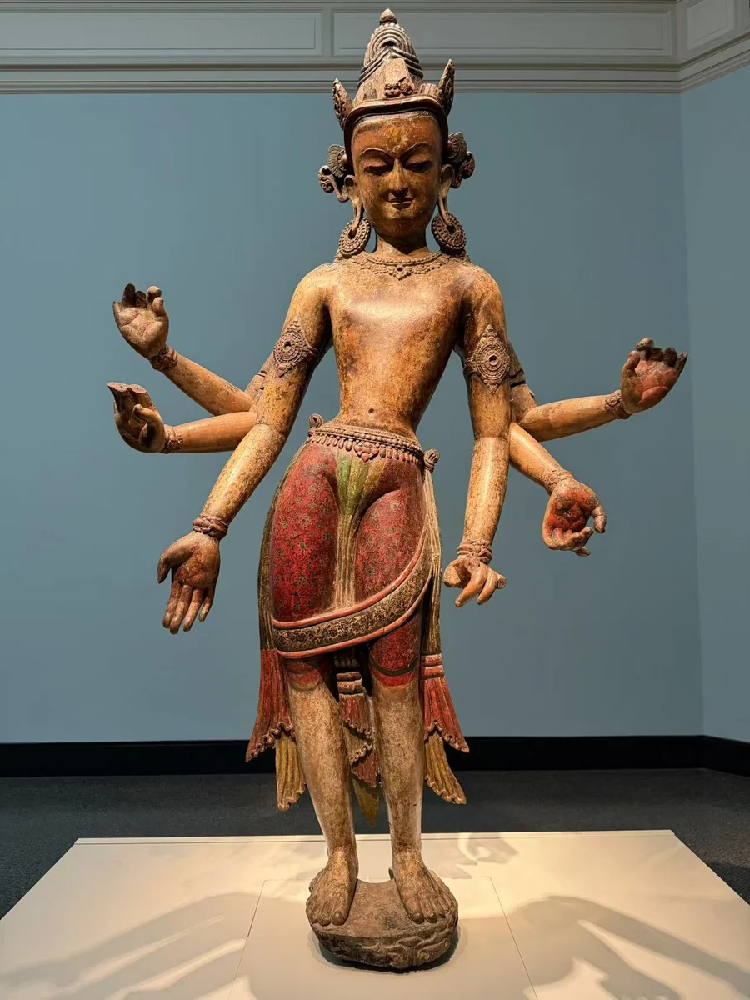
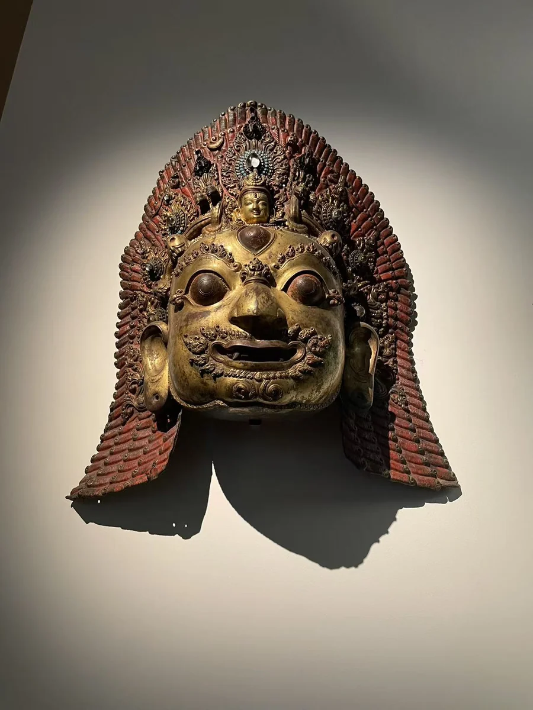
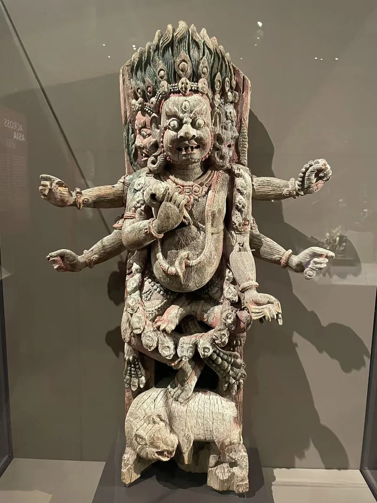

湿婆怖畏面具
吉美博物馆
11 / CLOSE LOOKING

白观音的木质身体保留着施彩与礼拜的痕迹。把它与怖畏湿婆面具、建筑斜撑并看，可以感到加德满都山谷的神像也生活在沐浴、节庆和建筑之中。佛教观音与印度教怖畏湿婆的身份各自清楚，它们共同展示的，是图像与日常仪式之间持续的关系。 [30]
细看：白观音的曲线与残彩；面具开口的仪式功能；斜撑上身体与木结构的关系。
图片按各自比例展示，实物不等大。

彩绘金属仪式面具

木
作品基本资料据现场展签及下列馆方记录整理；文字中的观看描述基于这里的现场照片。